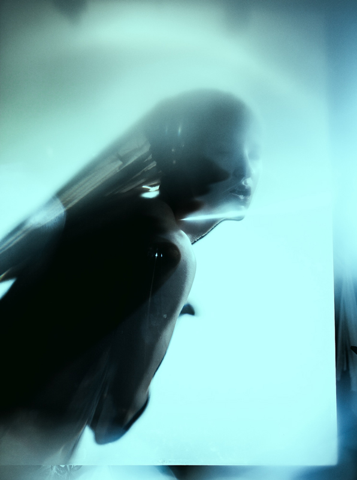
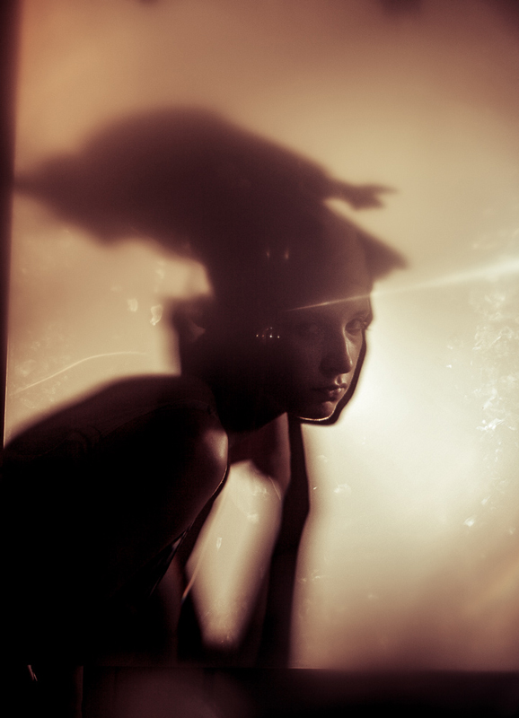
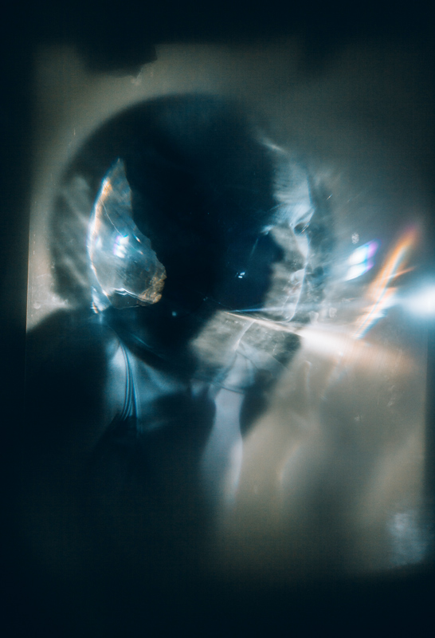
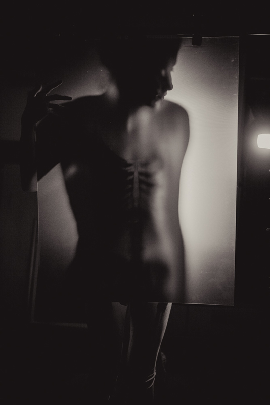
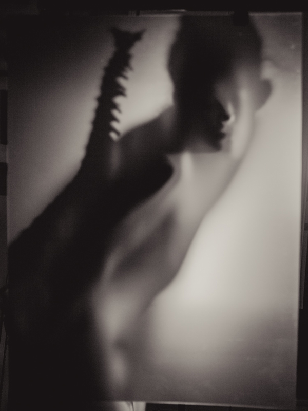
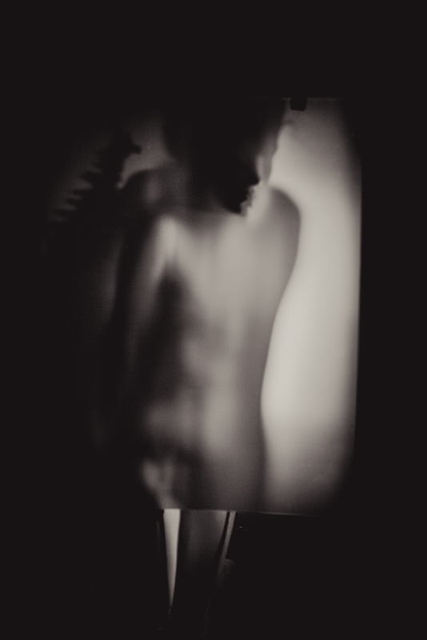
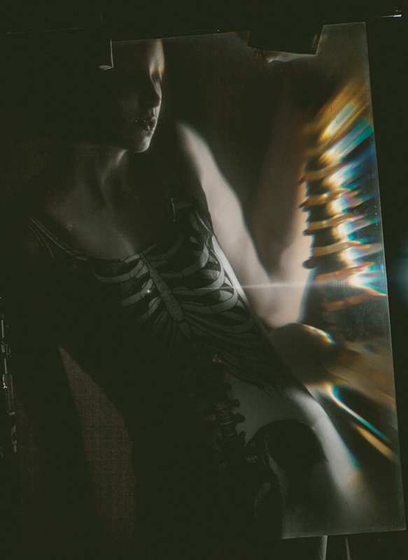
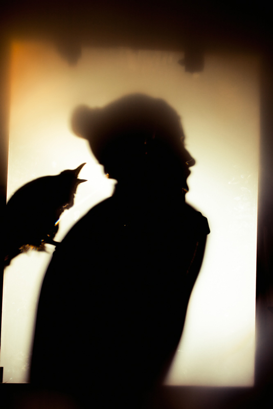
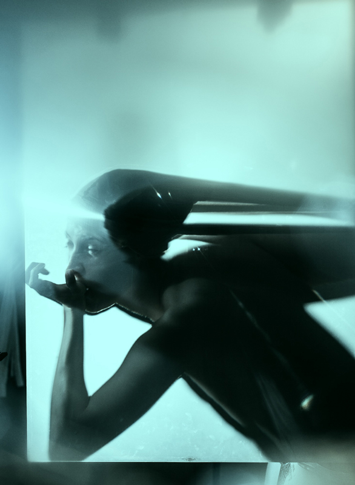

experimental psychedelic images
Experiments with glass bowls, magnifying sheets, light, reflections and shadow-projection reveal psychological layers. Inspired by medical scans, x-rays and shadow theatre, the images explore transparency and mystery in relation to the human body and mind.








